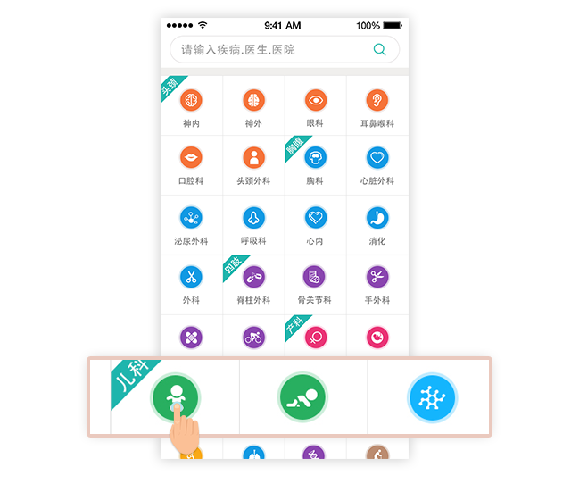
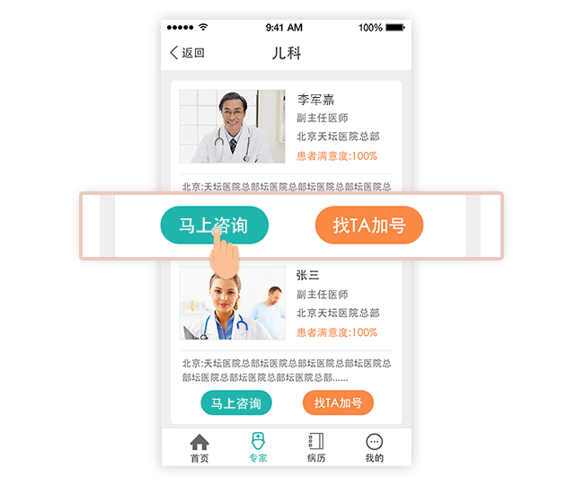
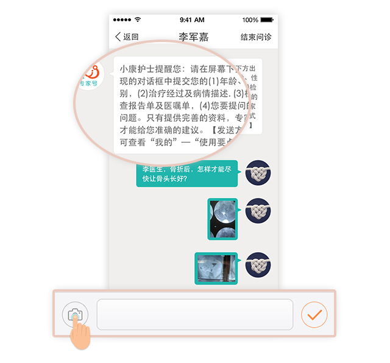
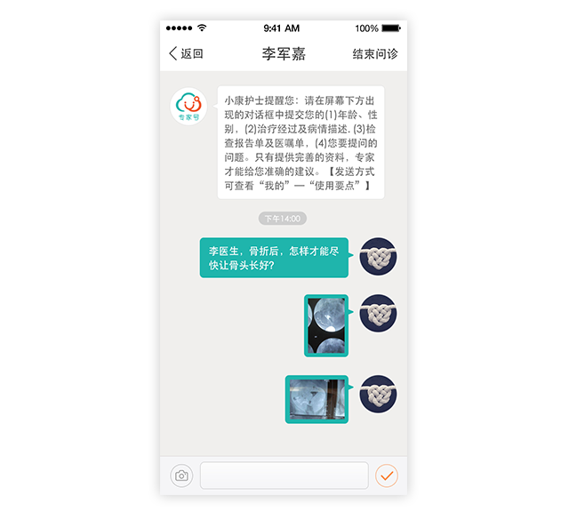
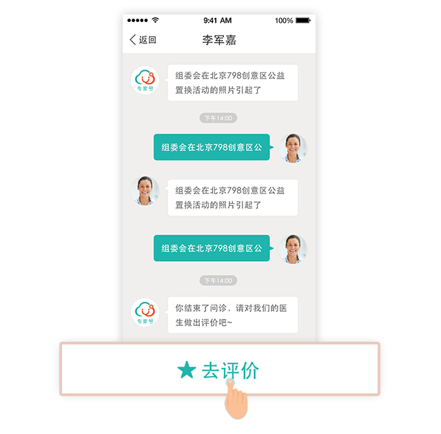

返回刚才页面，点击马上问诊，出现科室页面。
根据病症选择相应的科室。
选择专家，点击马上问诊。
根据系统提示，提交您的完整资料。
注意：上传CT、核磁或X光片时，需要无反光，不能使用闪光灯。点击屏幕右下角按钮可拍照上传。
等待问诊结果
资料提交给专家后，一般12小时内可以得到专家回复。由于顶级专家工作繁忙，经常出诊或手术您的问诊也许会有延迟回复，请耐心等待。
对专家进行评价
问诊结束后，请点击右上角评价按钮，对专家进行评价，您的评价对其他患者具有重要参考价值请您客观认真评价。